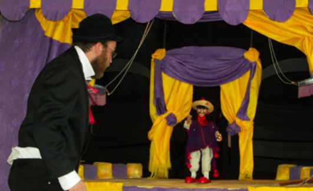
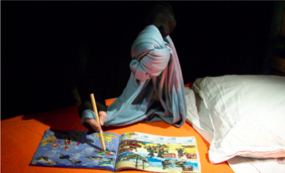
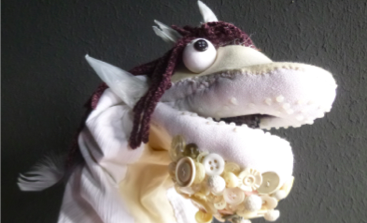
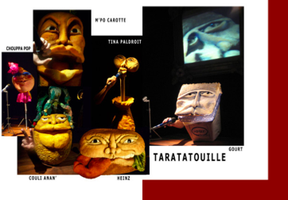
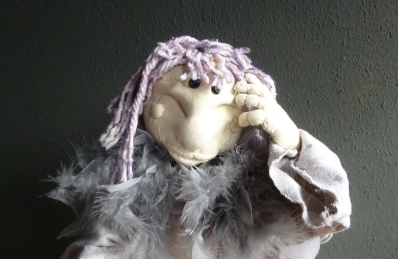
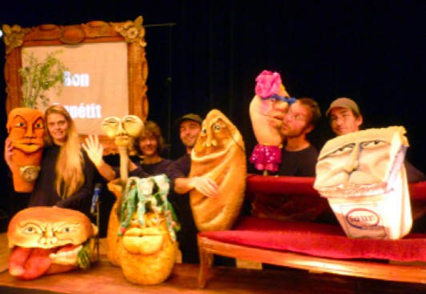
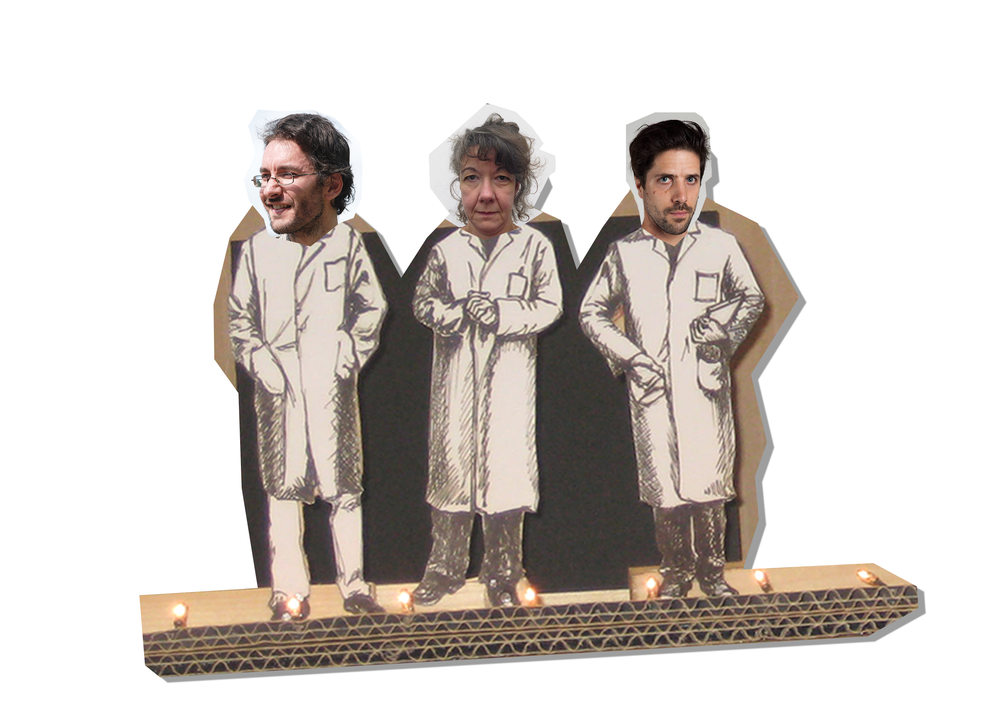

Depuis plus de 20 ans les marionnettes sont le cœur de métier de la compagnie.
Spectacles, expositions, ateliers pédagogiques, la compagnie va à la rencontre de petits et grands pour leur permettre d'apprendre en s'amusant et de découvrir le monde autrement.
En tournée :
Pour tous nos spectacles, nous sommes techniquement autonomes

CIRQUE DIVERS
Théâtre et marionnettes
- Tout public à partir de 2 ans -
Pour découvrir les grands numéros de cirque
interprétés par d’incroyables phénomènes.

LE NOEL DU DOUDOU
Marionnettes de table et musique
- Pour les enfants de 2 à 7 ans -
Scénettes poétiques et intimistes pour bien préparer Noël.

PORTRAIT DE FAMILLE
Ou l’envers du décor
Théatre, musique et marionnettes
- Tout public à partir de 3 ans -
Une belle occasion de faire plus ample
connaissance avec la grande famille des
marionnettes.

TARATATOUILLE
Musique, marionnettes et vidéo
- Tout public à partir de 3 ans -
Bienvenu sur le plateau de la célèbre
émission Taratatouille pour redécouvrir en
chansons les bonnes habitudes alimentaires.
Petit n'ira pas se coucher
Marionnette type Bunraku, musique et vidéo
- Tout public à partir de 3 ans -
Là où le jour s’éteint, l’aventure commence…
Petit pars à la quête du sommeil
CIRQUE DIVERS
« Entrez, entrez, et vous verrez ... Le plus petit cirque du monde !!
Paillasse, son directeur, a rapporté, des quatre coins de la Terre, les plus incroyables phé- nomènes ... Dont le LION D’INDE ! »
L’humour, la dérision et, avouons-le, un peu de magie, permettent de faire entrer tous les grands numéros de cirque dans ce petit chapiteau.
Tout au long de ce spectacle le comédien et les marionnettes s’interpellent : On rit, on rouspète, on panique !!!
Les spectateurs pénètrent ainsi peu à peu dans l’univers poétique et décalé de la com- pagnie.
Le noel du Doudou
Un catalogue de jouets, une lettre au Père Noël, de la neige, un Saint Nicolas en choco- lat... . Il y a des signes qui ne trompent pas : Noël est là!
A travers une dizaine de scénettes tour à tour drôles, tendres et émouvantes, on se retrouve au pied du sapin à guetter l’arrivée du Père-Noël bien décidé cette année à l’apercevoir!
Tout se passe sur un lit, là où l’enfant l’a laissé pour aller à l’école, le Doudou (un chiffon) prépare lui aussi Noël !
Tout comme un calendrier de l’avent le rideau s’ouvre sur (7) différentes scènes représenta- tives des préparatifs de Noël :
La découverte du catalogue de jouets
L’écriture de la lettre au Père Noël
La tombée de la neige : glissades et boules sont au rendez-vous
Les premiers petits rhumes et les journées bien au chaud au fond de son lit
La dégustation d’un Saint Nicolas en chocolat
La décoration du sapin
La nuit de Noël
A la manière d’un lm muet, aucune parole n’est prononcée : une musique au piano ac- compagne chaque action, chaque émotion : chacun mettra les mots qu’il souhaite et les enfants ne s’en privent pas à chaque représentation : ils aiment commenter et partager avec leur voisin ce qu’ils voient .
Portrait de famille

Dans cette famille, il y a le Grand-père : il ne se déplace qu’avec des fils. La Mère n’est qu’une ombre et la Petite Fille danse au bout des doigts.
Ce sont les “Marionnettes”; ils ne peuvent pas renier avoir hérité du même trait de caracrtère: farceurs, poétiques et drôles. Ils font tourner la marionnettiste et son mu- sicien en bourrique.
Ce spectacle est une belle occasion pour faire plus ample connaissance avec ce- tte grande famille.
Taratatouille

A partir d’un clin d’œil à la célèbre émission de Nagui : TARATATA, sensibiliser les enfants dès le plus jeune âge aux bonnes habitudes alimentaires.
Comment porter ce message sans être rébarbatif pour autant ?
o Grâce aux chansons entraînantes au style actuel : rap, reggae, rock, blues... o A l’absence de comédien visible sur scène/ pas d’adulte faisant la leçon.
o Un visuel décalé : les aliments vantent eux même leurs mérites.
Les marionnettes représentent les différentes catégories d’aliments :
Les viandes (Tina Paldroit : le pilon de poulet),
Les produits laitiers (Gourt : le yaourt bulgare),
Les féculents (Jules Pétri : le pain), - les fruits (Couli Anan’ : l’ananas)
Les légumes (M Pocarot’ : la carotte).
Ils forment cinq chanteurs se complétant à merveille : Un plateau (repas) parfaitement équilibré !
o L’emploi d’un contre-exemple :
L’arrivée de Heinz : le burger et de Choupa : la sucette provoque une réaction entre
scandale et jubilation : l’enfant a compris le principe du repas équilibré et en est er. Les enfants s’amusent tout en développant leurs connaissances.
Quelques mots sur la compagnie
Véronique Canevet : scénographe (Ecole Nationale Supérieure des Arts Décoratifs) marionnettiste formée au Théâtre des Mains nues d’Alain Recoing.
François-Xavier Reinquin : comédien (conservatoire de Mons -Belgique) musicien (métal Gnoux, Nécros Spirituals,…)
Antoine Pazos Suarez : comédien (Ecole Professionnelle Supérieure d’Art Dramatique – Théâtre du Nord dirigé par Stuart Seide) danseur (unité de recherche chorégraphique de l’université de Poitiers).

La Compagnie professionnelle BABA YAGA est fondée en 1997 par Véronique Canevet, elle crée et présente des spectacles pour enfants.
Rejoint par Benoit Flament dès 1999, la Cie ouvre une programmation jeune public dans un théâtre au cœur de Lille : le Biplan, qu’elle tient jusqu’en 2005.
Avec l’arrivée en 2004 de François-Xavier Reinquin puis Nicolas Deschildre et enfin Marie Burigat la Cie sillonne la région « Grand-Nord » de salles de spectacles en festivals.
En 2013, la Cie s’aventure sur les terres du spectacle pour adultes et son spectacle « l’auberge des Vandewinners » reçoit de nombreux prix.
En 2015, elle décide de remettre son savoir-faire au service du jeune public.